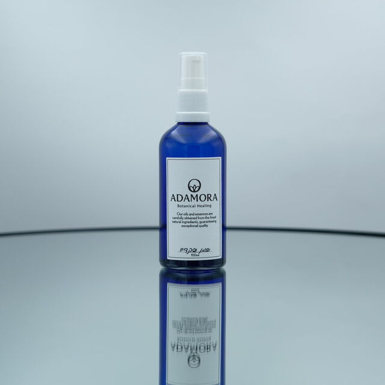
שמן לניקוי והזנת הפנים
שמן שקדים בכבישה קרה, עשיר ברכיבים המספקים הזנה ולחות.
מתאים גם להורדת איפור.
משחות, שמנים, קרמים ומארזים שאני רוקחת בעבודת יד.
מכיוון שכל המוצרים נרקחים מחומרים טבעיים, צמחי מרפא ושמנים אתריים פעילים, חשוב לי לוודא שמה שבחרת מתאים בדיוק לעור שלך, למצב שלך ולצרכים שלך. הרכישה מתבצעת בשיחה אישית – ממלאים טופס קצר עם פרטים ראשונים, ואני יוצרת קשר להתאמת הרכישה.
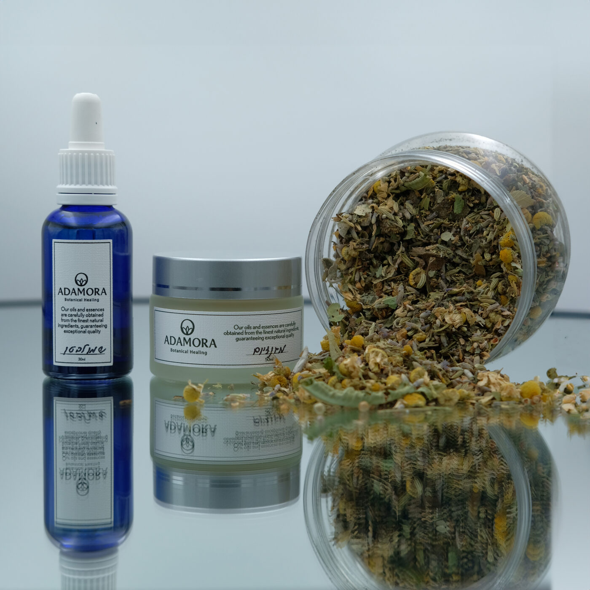

שמן שקדים בכבישה קרה, עשיר ברכיבים המספקים הזנה ולחות.
מתאים גם להורדת איפור.
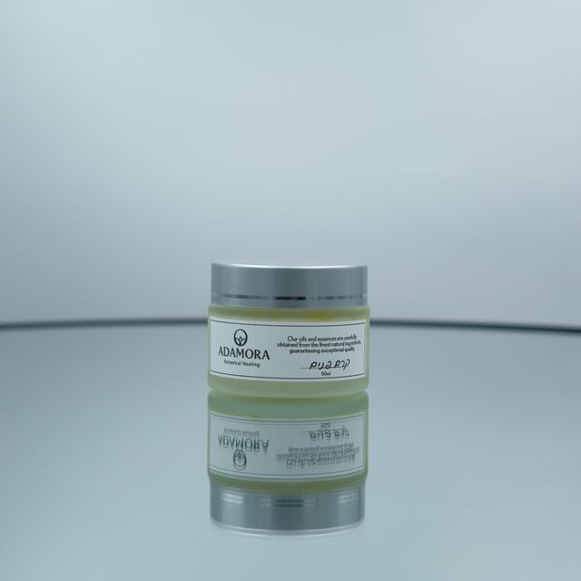
קרם פנים ארומתרפי עשיר בשמנים ייחודיים ומזינים, בעל פעילות נוגדת חמצון.
בקומבינציית שמנים נבחרת או בהתאמה אישית.
קרם פנים בעל מרקם קליל – לחות טבעית שאינה מכבידה על הנקבוביות.
לעור עם אקנה, כחלק משגרת בוקר וערב.
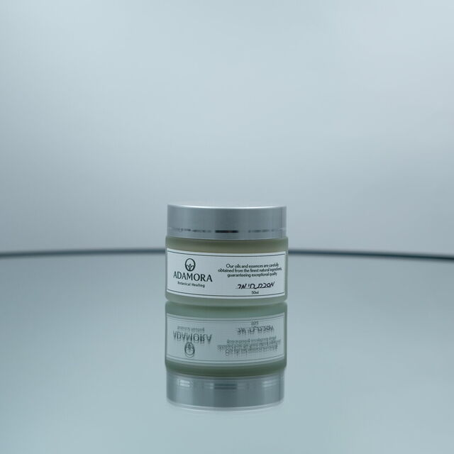
מסכת חימר טיפולית ומזינה מבוססת חימר ירוק.
מומלצת לטיפול באקנה, פעם בשבוע על עור נקי.
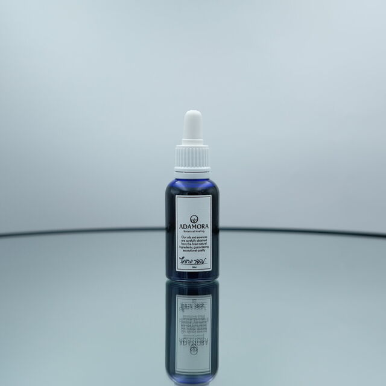
מי פנים טבעיים לחיטוי ואיזון.
להרגעת מצבי עור שונים, ביניהם אקנה.
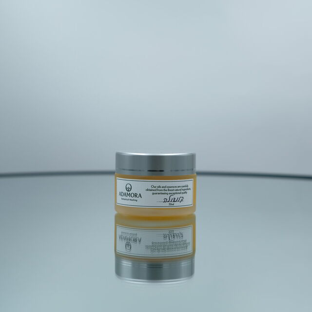
משחת עזרה ראשונה טבעית (נקראת גם ״משחת הקסם״).
עדינה ומתאימה לתינוקות ולעור רגיש.
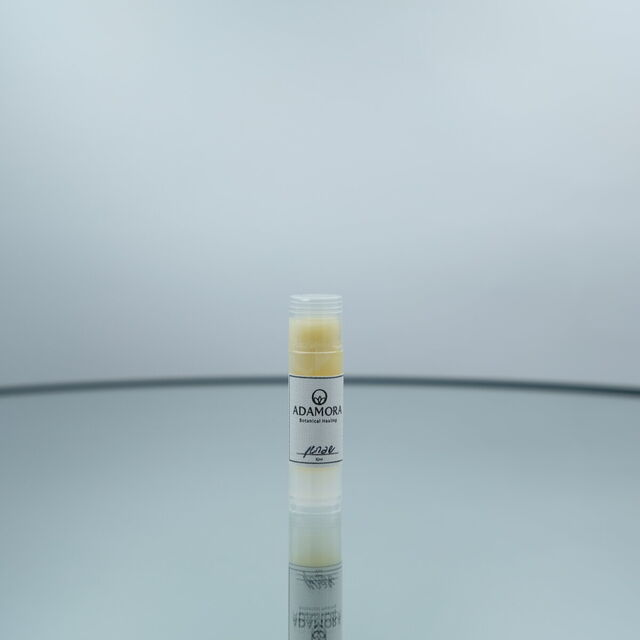
שפתון לחות והזנה מבוסס שמנים וחמאות מחומרי גלם טבעיים.
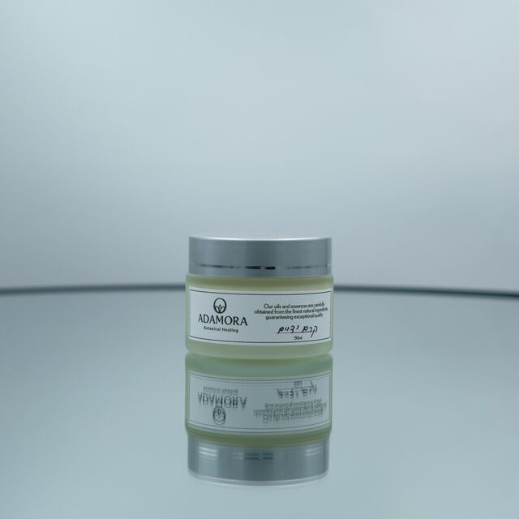
קרם ידיים ארומתרפי עשיר בשמנים ייחודיים, בעל פעילות משקמת ומזינה.
בקומבינציית שמנים נבחרת או בהתאמה אישית.
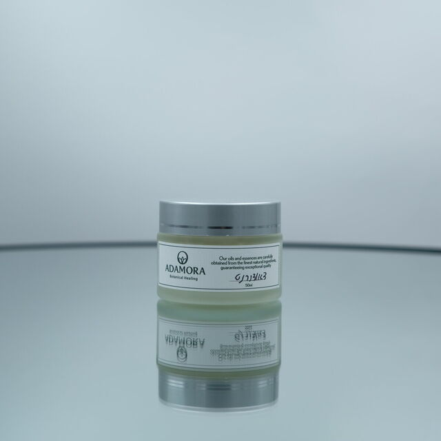
דאודורנט טבעי מבוסס מגנזיום, חמאות ושמנים טבעיים, בניחוח נעים ועדין.
מתאים לנשים ולגברים.
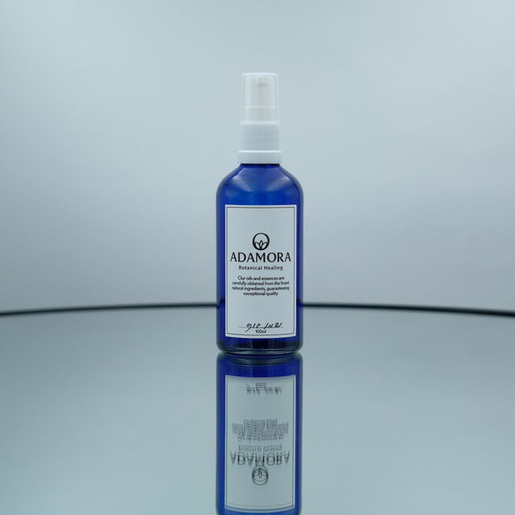
שמן גוף מעניק לחות והזנה לעור, לשימוש בסוף המקלחת.
מלח ים אטלנטי ופרחי לבנדר יבשים.
להרגעה בסוף היום, באמבט או באמבט רגליים.
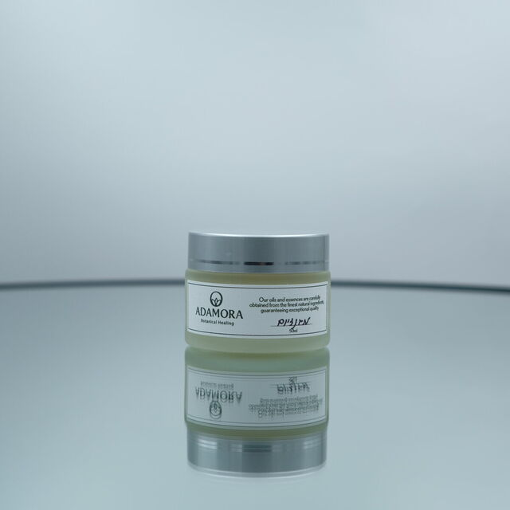
קרם עשיר במינרל מגנזיום ושמנים אתריים.
מתאים לספיגת המינרל דרך העור, להתכווצויות שרירים, כאבי מחזור וקשיי הירדמות.
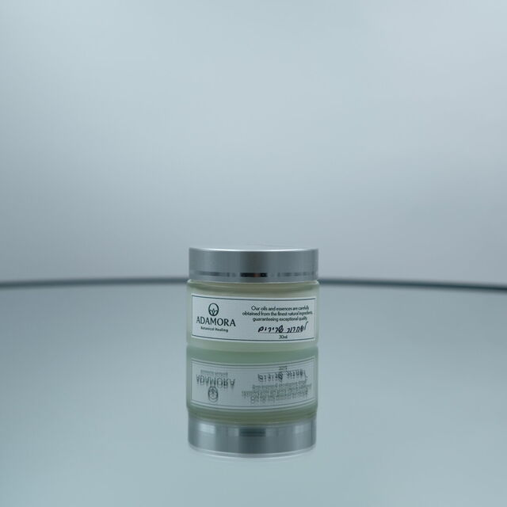
משחה על בסיס ג׳ל אלוורה עם שמנים אתריים נוגדי דלקת, שנספגת מהר.
להרגעת שרירים כואבים ומתוחים.
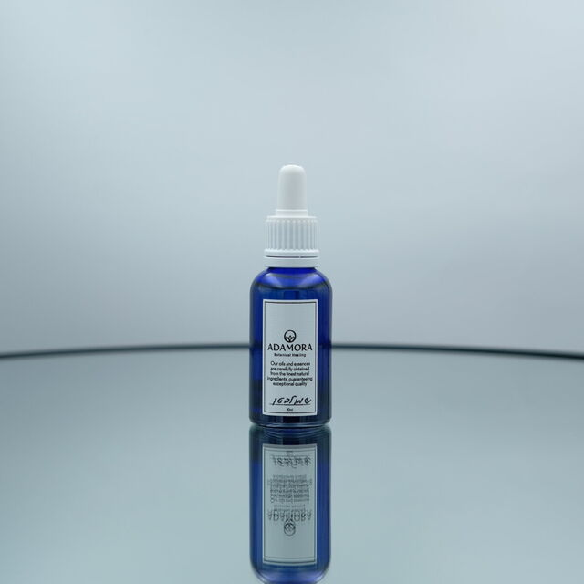
שמן נוגד עוויתות למערכת העיכול, עם שמנים שעובדים על הציר ההורמונלי.
מקל על כאבי בטן, PMS וכאבי וסת.
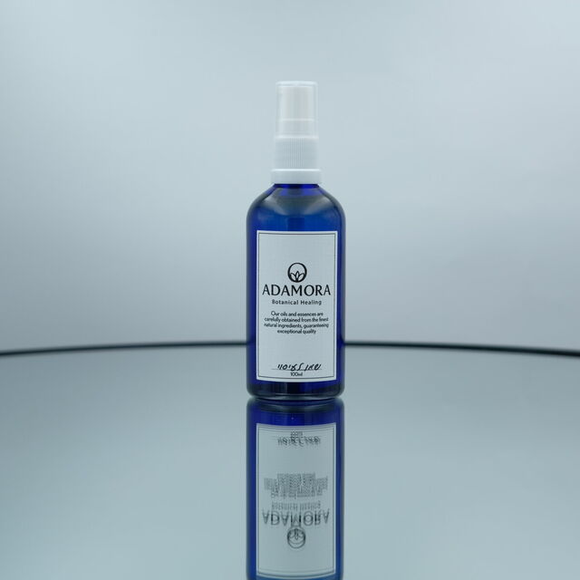
בניחוח אפרודיזיאק משכר, מכיל מיצוי וניל אורגני.
תערובת שמנים עדינה שמתאימה לתינוקות מגיל לידה, על בסיס שמן שקדים בכבישה קרה.
תערובת שמנים לעיסוי בזמן הלידה, התורמת להזרמת אנרגיה לשרירים והרגעה.
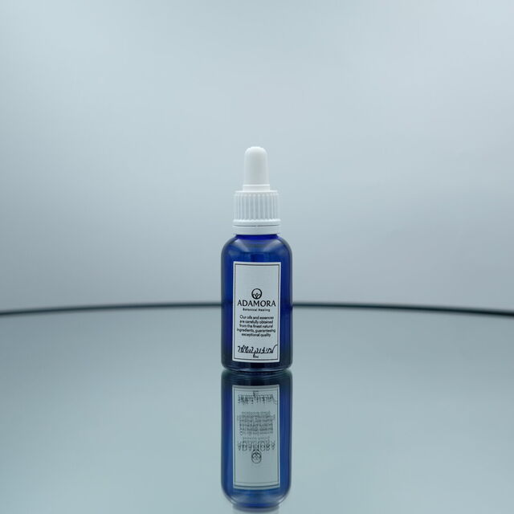
שמן למריחה מקומית לשיקום והרגעת האזור.
תערובת שמנים ארומתרפיים לחיזוק השיער והשורשים.
לנשירה, חולשת שיער וקשקשים.
מכיל רוזמרין – לא מתאים לילדים.
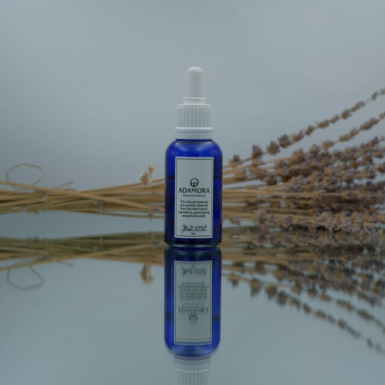
תמציות פרחים להתמודדות רגשית יומיומית, בטיפות.
טיפת שלווה – להרגעה, למתח ולשינה.
נוכחות – לריכוז ולמיקוד.
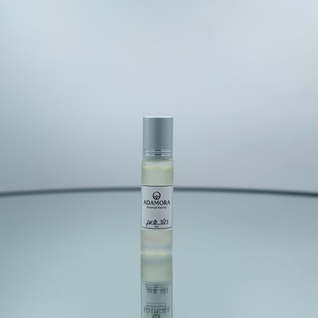
תערובות שמנים אתריים על בסיס שמן חוחובה אורגני, למריחה על נקודות הדופק.
אדמה – לקרקוע ושחרור עומס מחשבתי (לבנדר, ארז אטלס, פטשולי).
פנימה – לחיבור פנימי ושקט בראש (מנדרין, קמומיל רומאי, לבנדר).
אור – לקלילות, אופטימיות ומרץ (ילנג ילנג, תפוז, לבנדר).
לב – לפתיחת הלב ואהבה עצמית (לבונה, ברגמוט, לבנדר).
הרמוניה – לאיזון הורמונלי ושלווה (לבנדר, ברוש, גרניום, ורד, מרווה מרושתת).
תחליף טבעי לבושם, קל לנשיאה בתיק.
בקבוקון מלח הרחה עם שמנים אתריים – להרחה בכל רגע.
רגיעון – להרגעת מתח וחרדה.
נשימה עמוקה – לריכוז והרמת אנרגיה, לצינון, אף סתום.
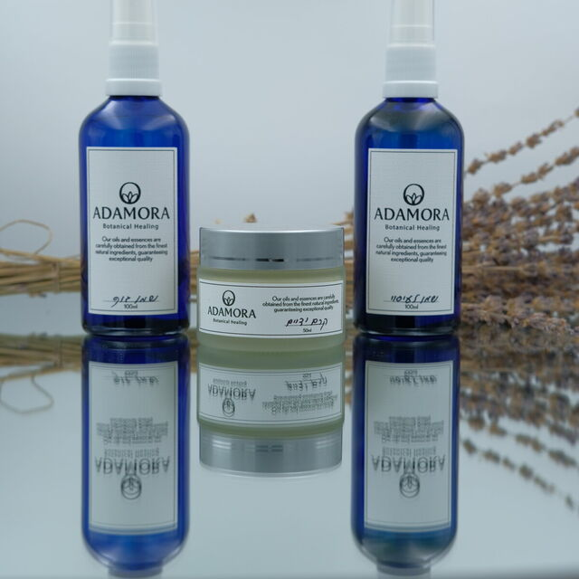
כל מה שצריך לטיפוח וטיפול יומיומי בעור עם אקנה, בשגרה של בוקר וערב.
כולל: שמן שקדים לניקוי · פרחי לבנדר בחומץ תפוחים אורגני · קרם פנים טיפולי · מסכת חימר · טיפת שלווה (פרחי באך)
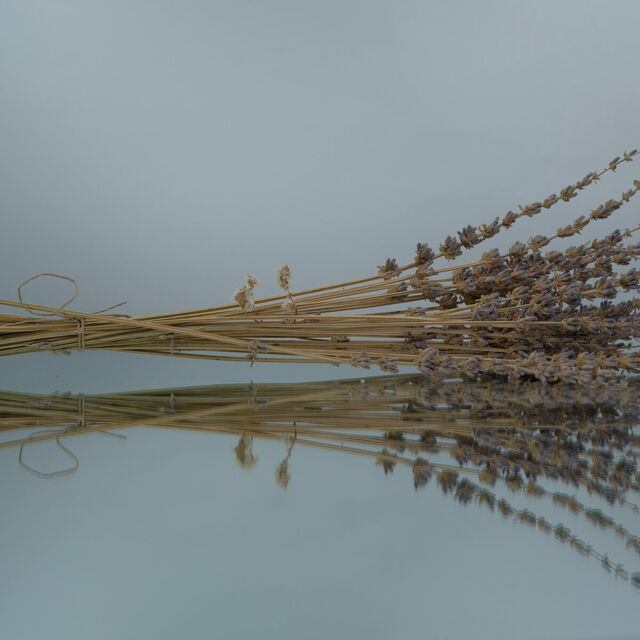
שלושה פריטים לשקט בראש ולמרחב נינוח: ריח, מגע ותמצית.
כולל: מקל פאלו סנטו · רולר ״אדמה״ · טיפת שלווה (פרחי באך)
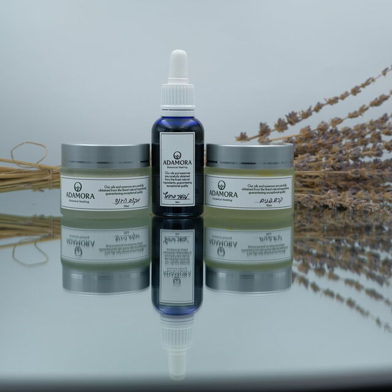
לחיבור גוף־נפש מיטיב בכל חודש מחדש: איזון, הזנה והקלה בימי הכאב.
כולל: רולר ״הרמוניה״ · שמן גוף · שמן עיסוי בטן · קרם מגנזיום
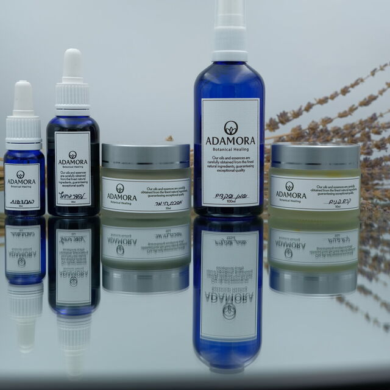
לקראת היום המרגש, מארז טבעי ומפנק במיוחד שעוטף ברוגע, באהבה ובאנרגיות טובות.
כולל: מלחי אמבט מפנקים · רולר ״לב״ · טיפת שלווה (פרחי באך) · משחת קלנדולה · שמן וניל מדגסקר · פאלו סנטו · קריסטל סיטרין · פרחים יבשים
מארז טבעי שנרקח במיוחד כדי לתמוך, לחזק ולהרגיע את הגוף והנפש לקראת הלידה ובימים שאחריה.
כולל: שמן שקדים טהור בכבישה קרה · שמן לתמיכה בלידה · שמן לתמיכה לאחר הלידה · מלח הרחה תפוז · שפתון תפוז טבעי · טיפת שלווה (פרחי באך)
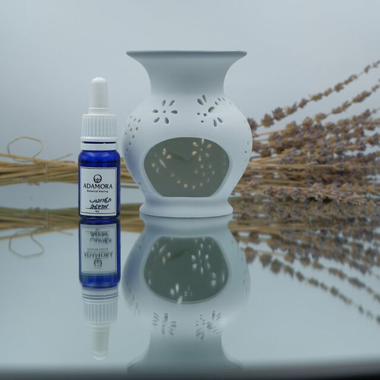
טקס שינה טבעי ומפנק, שנועד להרפות את הגוף, להשקיט את המחשבות ולעטוף לקראת שינה עמוקה ואיכותית.
כולל: קרם מגנזיום · מבער שמנים מקרמיקה · תערובת שמנים למבער
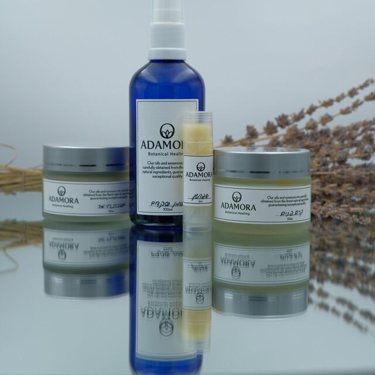
שגרת טיפוח טבעית, עם רכיבים טהורים המזינים את העור, מחיים אותו ומעניקים לו זוהר טבעי מבפנים ומבחוץ.
כולל: שמן שקדים טהור · קרם פנים טבעי · מסכת חימר · שמן גוף מפנק · שפתון טבעי · רולר שמנים ״לב״
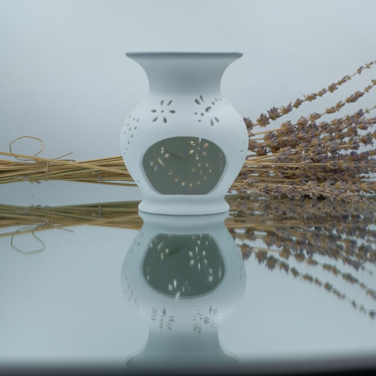
מבער שמנים מקרמיקה, בדגמים וצבעים משתנים לבחירה.
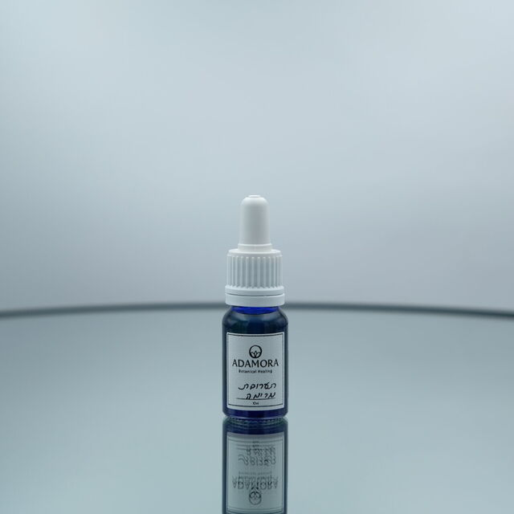
תערובת שמנים אתריים טהורים למבער.
ללמידה, עבודה, עייפות, מצב רוח ירוד, חולי והצטננות, ולטיהור חלל החדר.
שמן אתרי לא מדולל: לא על הגוף, לא בבליעה, לא בקרבת תינוקות מתחת לגיל שנה.
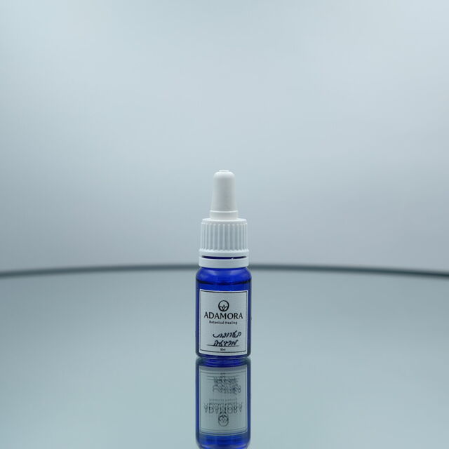
תערובת שמנים אתריים טהורים למבער.
לחדר הטיפולים, מדיטציה, יוגה, הרפיה וכניסה לשינה רגועה.
שמן אתרי לא מדולל: לא על הגוף, לא בבליעה, לא בקרבת תינוקות מתחת לגיל שנה.
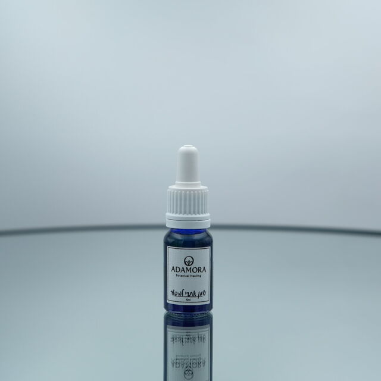
בקבוקון שמן אתרי טהור למבער.
לבחירה מבין ארבעה – לבנדר, תפוז מתוק, ארז אטלס, גרניום.
שמן אתרי לא מדולל: לא על הגוף, לא בבליעה, לא בקרבת תינוקות מתחת לגיל שנה.
״העץ הקדוש״ – לטיהור המרחב האנרגטי והשריית אווירה נינוחה.
לשריפה וטיהור אנרגטי.
ממלאים טופס קצר עם פרטים ראשונים, ואני יוצרת קשר להתאמת הרכישה. אחרי שנדבר – המוצר נרקח ונשלח, או נאסף.
חלק מהמוצרים — קרם פנים, קרם ידיים, מלח הרחה ופרחי באך — נרקחים לפי הצורך, אחרי שיחה קצרה. פרחי באך דורשים חידוש והתאמה בכל שלושה–ארבעה שבועות.
רוב המוצרים מתאימים לכולם. לילדים ולתינוקות — רק מוצרים שמיועדים להם במפורש (למשל משחת קלנדולה ושמן העיסוי לתינוקות), ותמיד אחרי שנדבר.
כן. משלוח ב-UPS לנקודת מסירה או עד הבית, או איסוף עצמי ברמת גן או בעמק האלה.
מה מחפשים — הרגעה, שינה, עור, ריח בבית — כותבים לי, ואני מתאימה.
לוואטסאפ